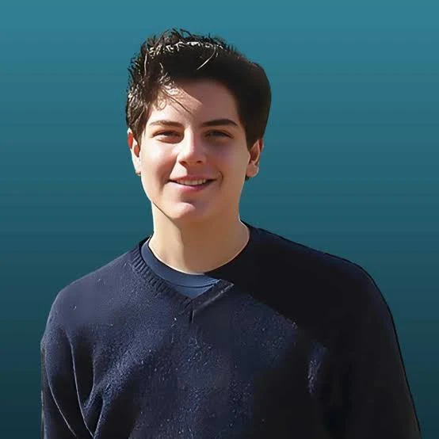
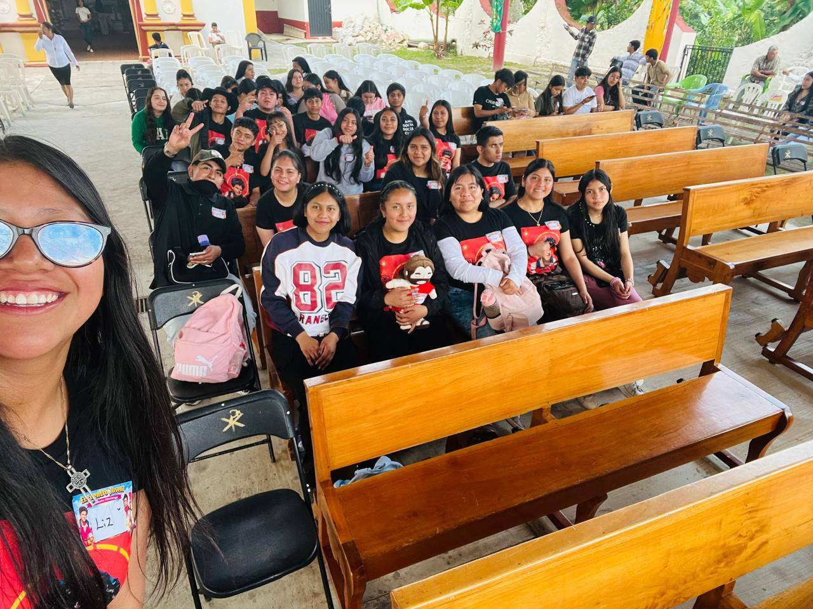
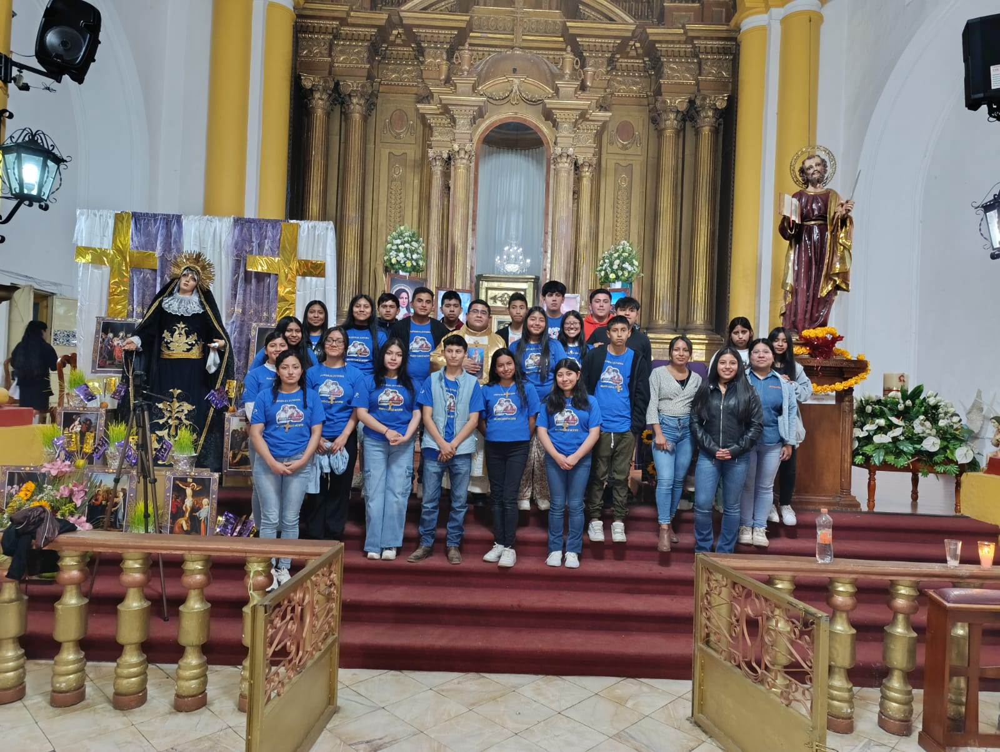
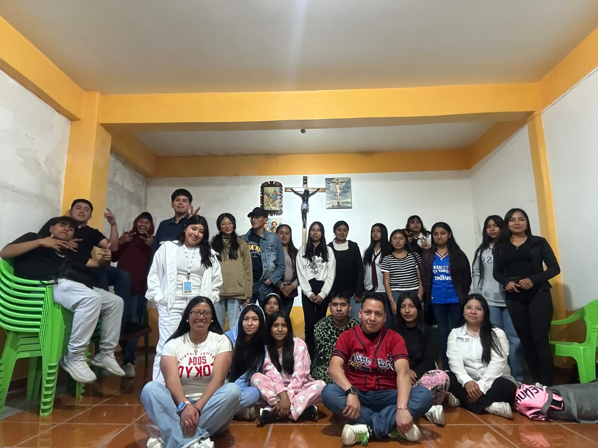
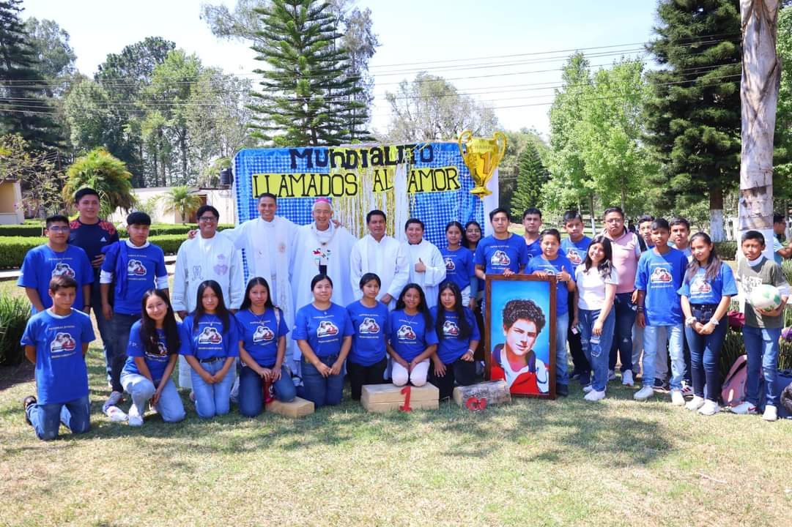
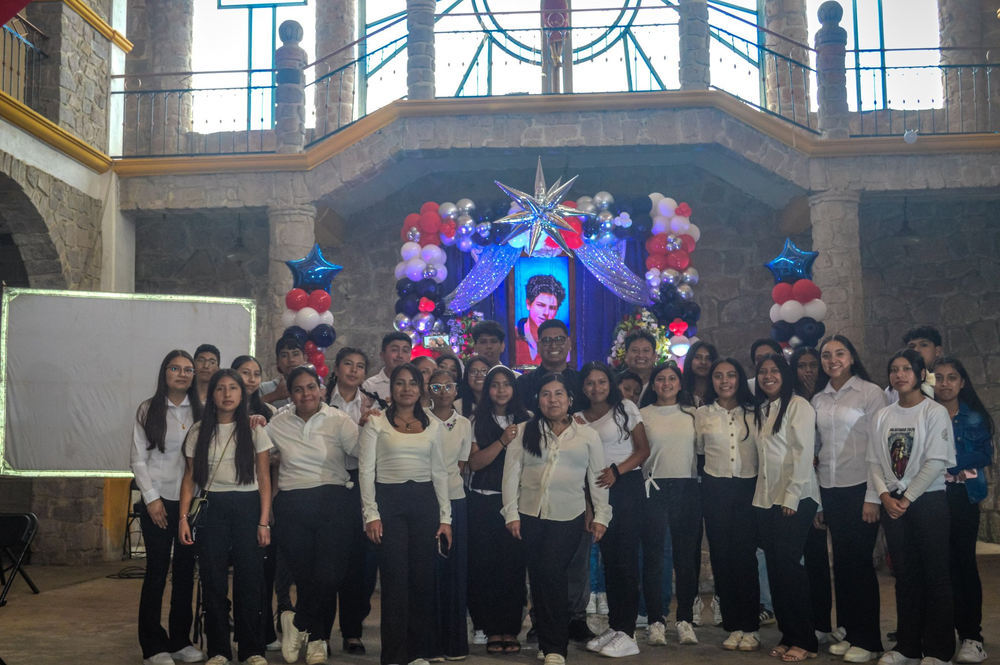
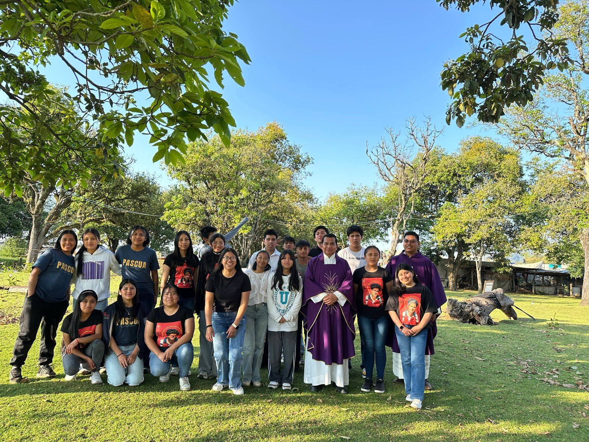

Jóvenes con fe, misión y corazón digital
La Eucaristía es mi autopista al cielo.
— Beato Carlo Acutis
Carlo Acutis nació el 3 de mayo de 1991 en Londres y creció en Milán, Italia. Fue un joven ordinario con una fe extraordinaria: amaba la Eucaristía, ayudaba a los pobres y usaba su talento en informática para evangelizar.
A pesar de su corta vida, dejó una huella profunda. Creó un sitio web documentando milagros eucarísticos de todo el mundo, llevando el mensaje de Cristo a la era digital.
Falleció el 12 de octubre de 2006, a los 15 años, por una leucemia fulminante. Fue beatificado el 10 de octubre de 2020 en Asís, Italia, y canonizado el 27 de abril de 2025.

Formamos jóvenes en la fe católica siguiendo el ejemplo de Carlo Acutis: con alegría, autenticidad y amor a la Eucaristía. Queremos ser "influencers de Dios" en nuestro entorno.
Somos un grupo de jóvenes de entre 13 y 29 años comprometidos con nuestra parroquia, la comunidad y el mundo. Nos reunimos semanalmente para orar, compartir y crecer juntos en la fe.
Adoración Eucarística • Catequesis juvenil • Servicio comunitario • Retiros espirituales • Evangelización digital • Grupos de oración • Actividades recreativas y culturales.
Ser una comunidad que transforma corazones y comunidades desde el amor de Cristo, usando todos los medios modernos — como hizo Carlo — para llevar el Evangelio a cada rincón.
Fe genuina • Fraternidad • Servicio • Alegría • Autenticidad • Amor a la Eucaristía • Devoción mariana • Caridad con los más necesitados.
Cada semana nos reunimos para fortalecer nuestra fe. Contamos con retiros mensuales, peregrinaciones anuales y actividades especiales en fechas litúrgicas importantes.

Carlo documentó más de 150 milagros eucarísticos alrededor del mundo. Aquí algunos de los más conocidos que él mismo catalogó en su exposición.
Durante la Misa, la Hostia se transformó visiblemente en Carne y el vino en Sangre. Estudios científicos modernos confirmaron que es tejido cardíaco humano vivo.
Un sacerdote con dudas vio cómo la Hostia empezaba a sangrar durante la consagración. Dio origen a la fiesta del Corpus Christi por el Papa Urbano IV.
Una Hostia encontrada en el suelo fue puesta en agua. Semanas después, se transformó en tejido humano. El entonces Cardenal Bergoglio (hoy Papa Francisco) mandó investigarla.
Carlo usó sus habilidades de programación para crear www.miracolieucaristici.org, una exposición virtual y física con evidencia científica y testimonios de milagros eucarísticos de todos los continentes. Fue su manera de evangelizar en la era digital.
📸 Fotografías





🎬 Videos
Oh Dios que entre los prodigios de tu gracia
en la tierra has hecho brillar al joven Carlo Acutis,
concédeme que, siguiendo su ejemplo,
pueda vivir plenamente la fe católica
y ser instrumento de tu misericordia
y amor hacia todos los jóvenes de nuestro tiempo.
Por intercesión de San Carlo Acutis,
concédeme la gracia que te pido...
(aquí tu petición)
y dame la gracia de llegar un día
a la felicidad eterna contigo.
No importa dónde estás en tu fe. Lo que importa es que des el primer paso. Como dijo Carlo: "Todos nacemos como originales, pero muchos mueren como fotocopias."